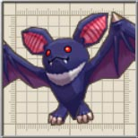

努力の割に、手に入るアイテムがしょぼいので、面倒くさければ何もせずに通過してもいいでしょう。
このスイッチを押すと、B'' 地点の扉が開きます。
このスイッチを押すと、D 地点の足場が出現し、その先にある宝箱の元へ移動できます。
目次 > ゲームについて > 日本Falcom 攻略 > ZWEI II > ダンジョン一覧 > 魔法石採掘場(LV.2)
らんの眼
ZWEI II (ツヴァイ 2、ZWEI II Plus)
| 概要 | 情報 | 攻略チャート |
| フード交換 | ペットについて | ボス戦 |
| 敵キャラ一覧 | ハンターランク | G-コロッセオ |
| アイテム一覧 | ガジェット一覧 | トレジャー一覧 |
| ダンジョン一覧 | クリアデータ特典 | Plusの追加要素 |
| ZWEI II攻略へ | 目次へ戻る |
| 第1 階層 |
| A 地点のレバーを動かすことで、A' 地点を往復するリフトが動きだし、先へ進めるようになります。 |
|
| B 地点のレバーを動かすと、B' 地点を往復するリフトが動き出し、先へ進めるようになります。 |
|
| C 地点もしくは、C' 地点のレバーを動かすと、C'' のリフトが動き出し、崖から落ちることなく先へ進めるようになります。 さらにゲームが進んだ状態ならば、「グラインドギア」で移動できるので、リフトを使う必要はないのですが。 |
| 第2 階層 |
|
A 地点のゴングを鳴らすと、扉が閉まり、「こぼると」が現れます。出てきた「こぼると」を全て倒すと、樽が出現し、「かっぱ巻き」が手に入ります。 努力の割に、手に入るアイテムがしょぼいので、面倒くさければ何もせずに通過してもいいでしょう。 |
| B 地点の岩を「爆弾」で破壊すると、真下にボタンスイッチが出現します。 このスイッチを押すと、B'' 地点の扉が開きます。 |
|
| C 地点の岩を壊すと、真下にボタンスイッチが出現します。 このスイッチを押すと、D 地点の足場が出現し、その先にある宝箱の元へ移動できます。 |
|
| F 地点のボタンスイッチを押すと、D 地点に足場が出現します。 |
| 第3 階層 |
| A 地点、A' 地点、そしてA'' 地点にはリフトに乗った大砲が出現します。大砲自体は爆弾で壊せるのですが、常に移動しており、爆弾では壊しづらいので無視した方がいいです。 | |
| B 地点のレバーは、扉の向こうからラグナのフックギアを使って動かすことができます。 | |
|  | C 地点へ行くと、「ばっとおじさん」が出現します。「ばっとおじさん」を倒すと、C' 地点の扉が開くのですが、その先にある宝箱はトレジャーでも装備品でもないので、無視してもいいかもしれません。 |
| 概要 | 情報 | 攻略チャート |
| フード交換 | ペットについて | ボス戦 |
| 敵キャラ一覧 | ハンターランク | G-コロッセオ |
| アイテム一覧 | ガジェット一覧 | トレジャー一覧 |
| ダンジョン一覧 | クリアデータ特典 | Plusの追加要素 |
| ページの上部へ | ZWEI II 攻略へ | 目次へ戻る |